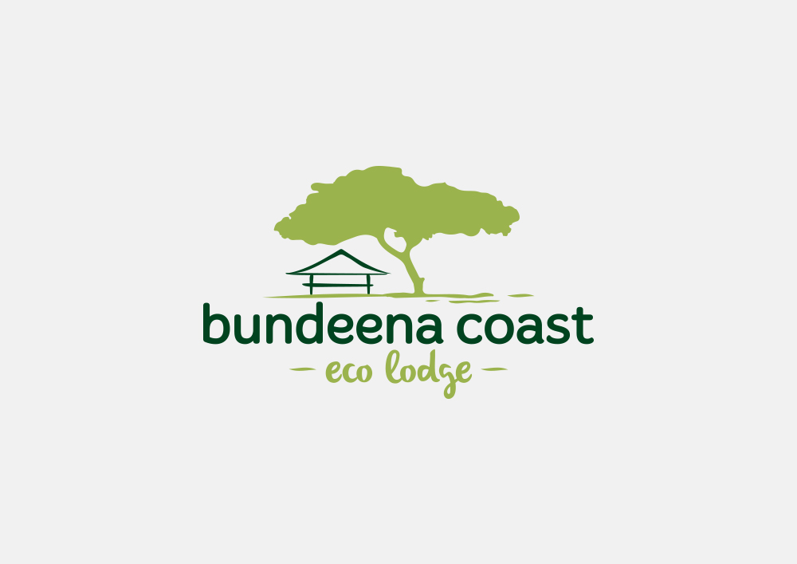
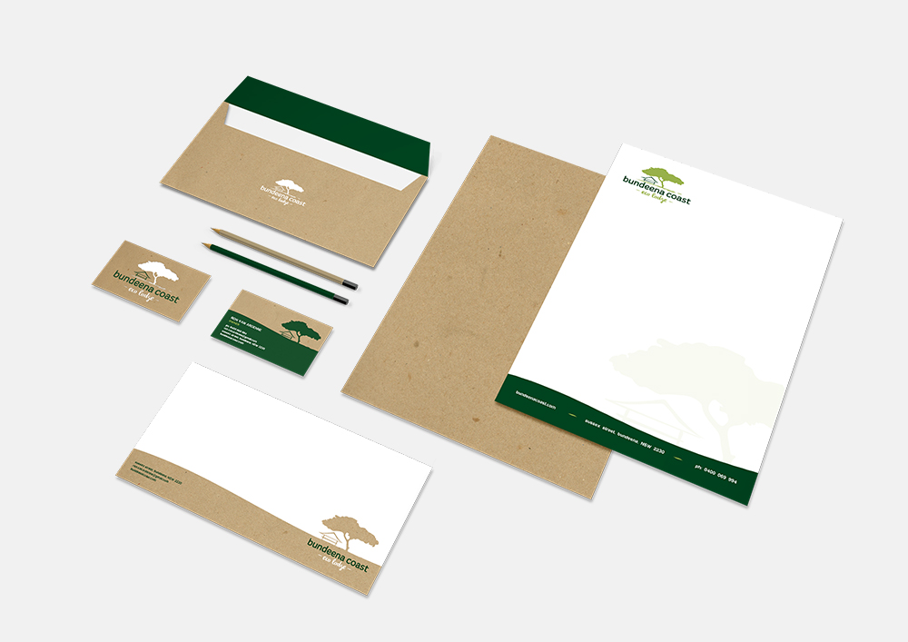
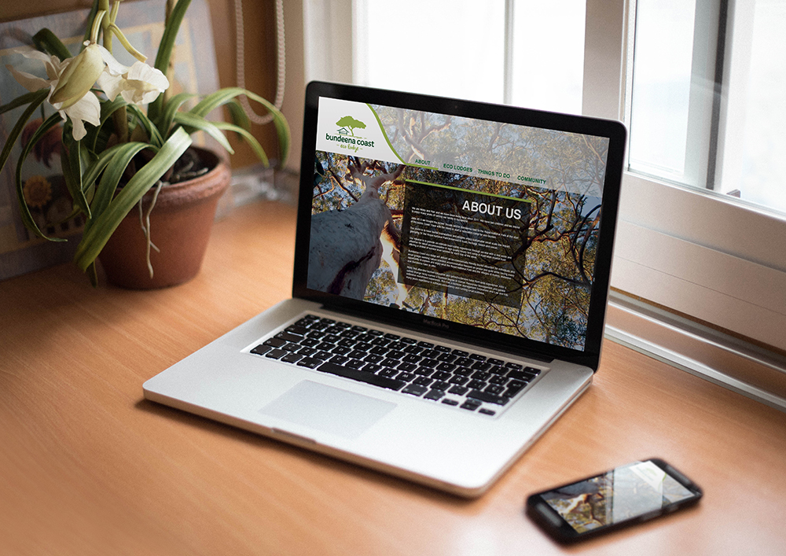
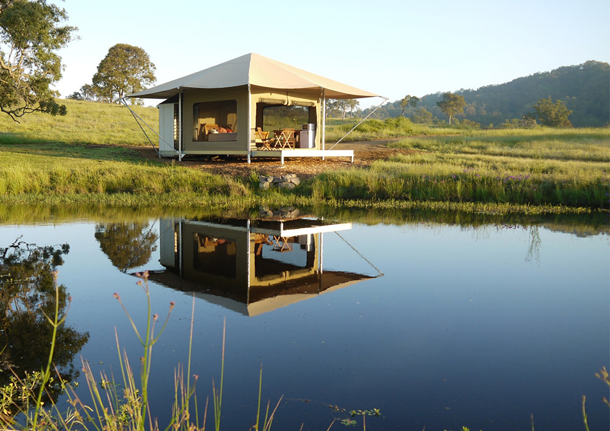

Bundeena Coast Eco Lodge
Once approved by council, Bundeena Coast will be a recreation camp for eco-tourism, situated next to the Royal National Park in NSW that provides an intimate bush camp experience in high quality luxury tents. The client needed an identity that reflects the nature in which the camp is situated and wanted to highlight the Agophora tree, which has become the motif of the brand both through an abstract icon as well as dynamic images of the tree. I have showcased vibrant, earthy tones and rounded shapes that allows the brand to be approachable and easily understood.



